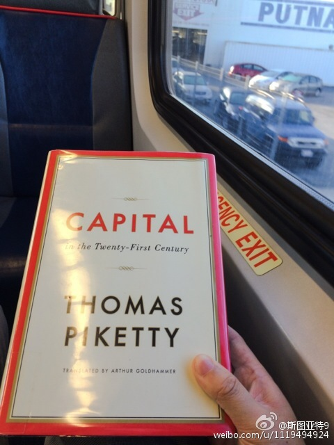

断断续续的，终于把这本书看完了，纪念一下。值得一读。正如一般的评论所说，这本书充满了“左”的基调，但不是马克思主义式的左。主要观点是预测贫富差距不断扩大的大趋势，并建议在全球范围增收资本税来对抗这一趋势。书的第四部分还对一些热门经济问题作了分析。推荐一下。@斯图亚特9:开始装B Grand Blvd 
美国私立名校基本都是严进宽出。据说因为淘汰率太高对招生有影响。而社区大学之类多数都是宽进严出，学位把关是毕业这一关。另外这是什么出版人胡乱想像点关于清华的事情就胡说八道呢。@出版人周筠:#大学之路# 哈佛大学为什么执行这样一种在成绩上放水，或毕业时宽出的政策呢？首先，哈佛的学生都是原来各个中学的尖子，水平普遍高于其他大学，在哈佛排名在70%的学生，可能比很多大学排名前10%的学生还强。因此，如果后者在学校里得了A，前者花了同样的努力也应该得A，因此哈佛大学得A的比例非常高。
新浪体育下面的评论区的骂仗真是一道风景，几乎各类新闻都有，其中中超的骂仗最为龌龊低俗。而新闻编辑还特别喜欢发极具争议的新闻评论招你看下面的评论，结果就只能在评论区骂仗的汪洋大海里寻找几个有内容的帖子。真是恶生态啊，这都是新浪的PM有意设计的吗？
 Grand Blvd
Grand Blvd